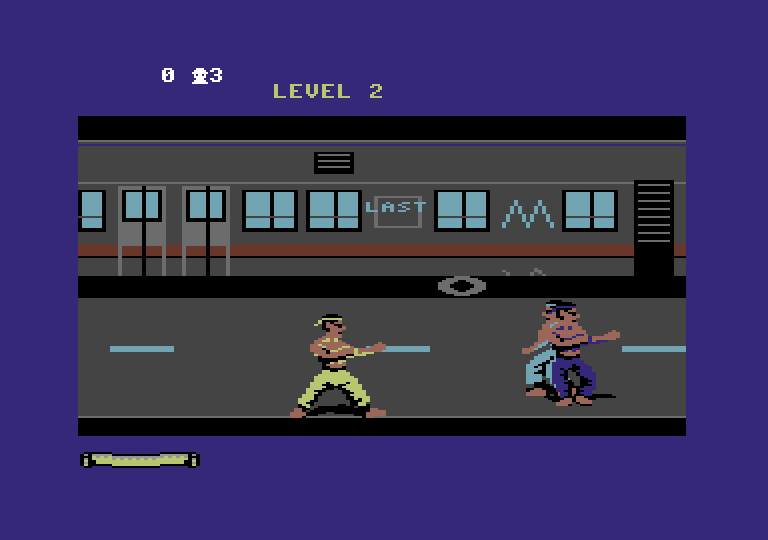
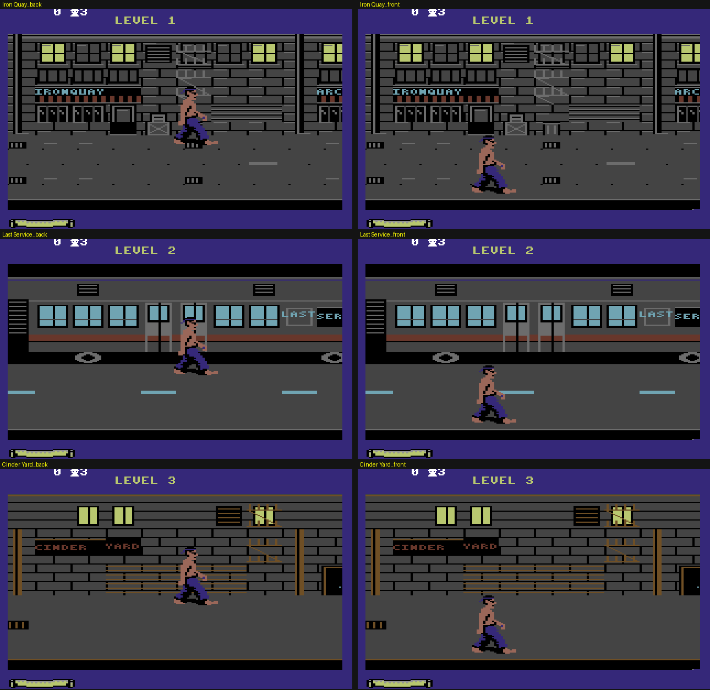

DEVLOG #16 · FIST II REMASTER
Three temporary levels! And the hits come with sound
· 4 min read

Another big day. The game now has three levels, all original art, and both Fist II maps are off the list. And for the first time, the hits make a sound.
Three levels
My good friend sent two more levels and went back over the first one. Iron Quay got a new street: asphalt, drains and road markings. Last Service is a night train: silver carriages, blue windows and a red stripe along the train. And Cinder Yard is a brick freight depot. Both new levels have a ladder up to the roof, and another fight is waiting up there.
The climb itself now looks like a climb, too. Until now the fighter jumped onto the ladder and floated up in a fighting stance, which looked a bit silly. Now you see him from behind, hand over hand up the ladder, over the edge of the roof and on up. The climbing frames are still placeholders until our artist draws them.
From the CharPad files, our tool built exactly the bytes he sent, and every one of the 13 rooms comes out in the game the same as in CharPad, pixel for pixel. We also checked that no character is taken from another game.

Exactly where you walk
In the first version of the levels I saw that something didn't add up: the fighters walked through crates, stood on the train's wheels, and the road ran all the way to the bottom of the screen, somewhere nobody ever gets to. We measured the exact line in the game: the player's feet move between line 99 and line 143 of the map, and the enemies 6 lines further each way. We turned that into an explainer page for the artist, with the levels and the band drawn on them, and he redrew all three. Now the walls, crates and wheels end above the band, and inside it there is only street.
And a bonus: the simpler art packs smaller, and the level memory now has 236 bytes free instead of 15.
The hits make a sound
Until now the game had no sound effects at all. Now it has 14, sent by my friend: a punch swishing through the air, a hit, a kick, a heavy hit for the boss, a body falling, a knockout, the player getting hit, and more. The SID has only three channels, and the Mythus tune uses all three,
so each effect "borrows" the third channel only while it plays, then hands it back to the tune, right on the beat. There's still work to do, because there are sounds I really don't like!! But it's something...
Two bugs
A small piece was flickering in the bottom right corner of the game. The instruction that colours the background of the energy bar row was written a few CPU cycles too early, and landed on the last line of the game area itself. We moved it by one instruction, and in a test with enemies on screen, across all three levels, it never shows up (in 450 screens, against 124 before).
The second bug: you could barely see the enemies. All the streets are dark grey, one enemy was dark grey himself, and the red and the brown were hardly any different. Now they're green, turquoise, yellow and light green. We picked colours far from both the street and the player's blue, because light blue looks almost like the player himself.
Behind the scenes
The test build now has an L key that skips to the next level. It won't be in the release. There's also a build with no enemies at all, just for walking around the levels and looking at the art. And the original Fist II music is now also a GoatTracker song, with the same notes and the same instruments, for anyone who wants to remix it.
What's next
Getting the new level music in. It's written for two channels only, precisely so the effects don't cut into it, but right now it's bigger than the space it has. And there's a bug we found along the way: after GAME COMPLETE the title screen only stays up for a few seconds,
and the game starts on its own.